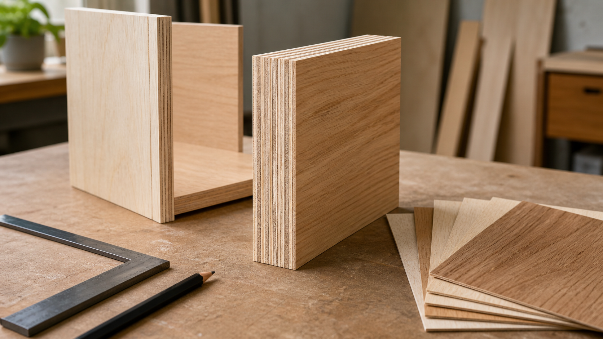

합판의 교차 적층이 가구 구조를 안정시키는 방식

합판은 원목을 흉내 낸 값싼 대체재로만 이해되기 쉽습니다. 그러나 제작자의 눈으로 보면 합판은 나무를 얇게 나누고 다시 방향을 바꾸어 묶은 공학적 재료입니다. 한 장의 넓은 판처럼 보이지만, 내부에는 여러 장의 단판이 겹쳐져 있고 각 층의 결 방향은 서로 엇갈리도록 배열됩니다.
이 구조는 가구에서 매우 실용적인 의미를 갖습니다. 넓은 수납장 옆판, 책장 선반, 서랍 박스, 침대 하부 판, 큰 문짝처럼 넓고 평평한 면이 필요한 부위에서는 원목판보다 합판이 더 예측 가능한 선택이 되는 경우가 많습니다. 중요한 것은 합판을 원목보다 낮은 재료로 보는 것이 아니라, 어느 부위에서 어떤 장점을 쓰는지 정확히 구분하는 일입니다.
합판은 결 방향을 한쪽에만 맡기지 않습니다
원목 판재는 나뭇결 방향과 그에 직각인 방향의 성질이 다릅니다. 길이 방향으로는 강하고 연속적이지만, 넓은 판으로 만들면 방향에 따른 움직임과 힘의 차이가 설계에 영향을 줍니다. 합판은 이 차이를 줄이기 위해 얇은 단판을 여러 겹 쌓고, 인접한 층의 결 방향을 보통 직각으로 교차시킵니다.
APA - The Engineered Wood Association은 합판을 얇은 단판을 교차 적층해 열과 압력, 접착제로 결합한 목질 판재로 설명합니다. 이 설명에서 핵심은 두 가지입니다. 첫째, 합판은 단순히 얇은 나무를 많이 붙인 판이 아닙니다. 둘째, 결 방향을 교차시키는 배열이 판의 길이와 폭 양쪽에서 더 균형 잡힌 성능을 내도록 돕습니다.
홀수 층과 대칭 구조가 중요한 이유
합판은 보통 홀수 층으로 구성됩니다. 겉면과 뒷면의 결 방향이 같은 축을 갖도록 만들면 판의 앞뒤 성격이 더 균형을 이루기 쉽기 때문입니다. 가운데 층을 기준으로 양쪽 구성이 대칭에 가까울수록 한쪽 면만 과하게 성격이 달라지는 일을 줄일 수 있습니다.
미국 구조용 합판 표준인 DOC PS 1은 구조용 합판의 수종, 단판 등급, 접착, 층 구성, 치수 허용오차, 표시와 검사 기준을 다룹니다. 가구 제작자가 건축용 구조 계산을 그대로 가져올 필요는 없지만, 표준이 단판 등급과 층 구성, 접착 성능을 별도 항목으로 관리한다는 사실은 중요합니다. 합판의 품질은 겉무늬 하나가 아니라 내부 층과 접착, 제조 기준의 조합에서 결정됩니다.
가구에서는 넓은 면과 얇은 두께가 만나는 곳에 유리합니다
합판의 장점은 특히 넓은 면을 얇게 만들어야 할 때 드러납니다. 수납장 몸체의 옆판과 상하판은 일정한 두께로 넓은 면을 이루어야 하고, 서랍 박스는 가볍지만 직각을 유지해야 하며, 큰 문짝은 앞면이 단정해야 합니다. 이런 부위에서 합판은 판 전체가 한 방향으로만 성격을 드러내지 않기 때문에 제작과 조립이 안정적입니다.
반대로 손이 자주 닿는 두꺼운 상판, 모서리를 깊게 깎아 형태를 만드는 부위, 장부가 그대로 드러나는 프레임에서는 원목이 더 어울릴 수 있습니다. 합판의 단면 층은 구조적으로는 장점이지만, 디자인 의도에 따라 감추거나 강조해야 할 시각 요소가 됩니다. 그래서 좋은 제작은 원목과 합판을 경쟁시키지 않고, 각 재료가 잘하는 자리를 나눕니다.
단면은 숨길 수도, 디자인으로 드러낼 수도 있습니다
합판 가구를 가까이 보면 가장자리에서 얇은 층이 반복되는 선을 볼 수 있습니다. 저가 가구에서는 이 단면을 플라스틱 엣지나 무늬목 테이프로 급히 가리기도 하지만, 정교하게 샌딩하고 마감하면 단면 자체가 제작 방식을 보여 주는 그래픽 요소가 될 수 있습니다. 북유럽 가구나 공방 제작 의자에서 합판 단면의 층이 의도적으로 드러나는 이유도 여기에 있습니다.
다만 단면을 드러내려면 재단 품질과 마감이 함께 따라와야 합니다. 톱날 자국, 빈틈, 뜯김이 그대로 보이면 교차 적층의 장점보다 거친 인상이 먼저 전달됩니다. 단면을 감출 때도 마찬가지입니다. 엣지 밴딩이 들뜨거나 모서리에서 끊기면 사용 중 손에 걸리고, 판재가 가진 단정한 면성이 흐트러집니다.
합판을 고를 때는 겉면보다 용도를 먼저 봅니다
합판에는 구조용, 마감용, 내장용, 산업용 등 다양한 등급과 표면 품질이 있습니다. 모든 합판이 같은 가구용 품질을 갖는 것은 아닙니다. 보이는 문짝에는 표면 단판의 무늬와 결점, 샌딩 상태가 중요하고, 보이지 않는 몸체 구조에는 두께, 층 수, 접착 품질, 평활도가 더 중요할 수 있습니다.
가구를 주문하거나 제작할 때 "합판을 썼는가"보다 더 정확한 질문은 "어느 부위에 어떤 합판을 왜 썼는가"입니다. 넓은 수납장 뒷판에 얇은 합판을 쓰는 이유, 서랍 밑판에 일정한 두께의 합판을 쓰는 이유, 큰 문짝 내부에 안정적인 판재 구성을 쓰는 이유가 설명되어야 합니다. 이 설명이 분명하면 소재 선택은 비용 절감의 변명이 아니라 설계의 일부가 됩니다.
목간의 시선
목간은 원목 가구를 만들더라도 모든 부위를 원목으로만 해결해야 한다고 보지 않습니다. 좋은 가구는 보이는 감촉과 보이지 않는 구조가 함께 오래가야 합니다. 원목은 손에 닿는 깊이와 결의 표정을 만들고, 합판은 넓은 면과 내부 구조에서 안정된 기준면을 만들 수 있습니다.
합판의 교차 적층을 이해하면 가구를 보는 기준도 달라집니다. 단면에 층이 보인다고 해서 곧 낮은 품질은 아니며, 무늬목으로 감췄다고 해서 곧 좋은 제작도 아닙니다. 중요한 것은 재료의 이름이 아니라 방향, 층, 접착, 부위, 마감이 서로 맞는가입니다. 제작자가 이 관계를 정직하게 설명할 수 있을 때, 합판은 원목을 대신하는 재료가 아니라 가구를 더 정확하게 만드는 재료가 됩니다.